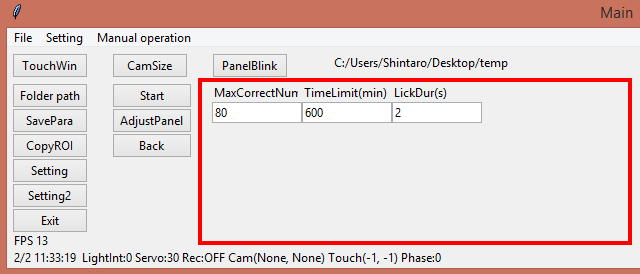
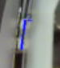
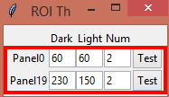
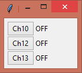
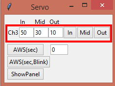

3. About "Phase 0"
The following is a code in phase 0.
This code is executed during task parameter setting.
=======================================================================================================================
if Phase == 0: # Parameter inputs
if Phase0_Init == 0: # Make GUI for the setting of the parameters for this task
RemoveMainRightWidget() # Remove task buttons
PutStartBackButton() # Put "start" and "back" buttons
ColumnWidth = 14 # Width of input columns
mMaxCorrectNum = ttk.Label(MainWindowRightFrame, text='MaxCorrectNum', width=ColumnWidth).grid(row=0, column=0, sticky=W) # Put label
MaxCorrectNumVar = IntVar(MainWindowRoot) # Declare a variable for input column
iMaxCorrectNum = ttk.Entry(MainWindowRightFrame, textvariable=MaxCorrectNumVar, width=ColumnWidth).grid(row=1, column=0) # Create input column and link it with the variable
mTimeLimit = ttk.Label(MainWindowRightFrame, text='TimeLimit(min)', width=ColumnWidth).grid(row=0, column=1, sticky=W)
TimeLimitVar = IntVar(MainWindowRoot)
iTimeLimit = ttk.Entry(MainWindowRightFrame, textvariable=TimeLimitVar, width=ColumnWidth).grid(row=1, column=1)
mLickDur = ttk.Label(MainWindowRightFrame, text='LickDur(s)', width=ColumnWidth).grid(row=0, column=2, sticky=W)
LickDurVar = IntVar(MainWindowRoot)
iLickDur = ttk.Entry(MainWindowRightFrame, textvariable=LickDurVar, width=ColumnWidth).grid(row=1, column=2)
Str = "ParametersForTask" + str(GetTaskID())
if os.path.exists(Str + '/MaxCorrectNum.dat') == True: # If save file named "MaxCorrectNum.dat" exist:
with open(Str + '/MaxCorrectNum.dat', 'rb') as PickleInst[GetTaskID()]:
MaxCorrectNumVar.set(pickle.load(PickleInst[GetTaskID()])) # Substitute loaded data into the variable of this program
else: # If save file doesn't exist
MaxCorrectNumVar.set(80) # Substitute 80 into the variable
if os.path.exists(Str + '/TimeLimit.dat') == True:
with open(Str + '/TimeLimit.dat', 'rb') as PickleInst[GetTaskID()]:
TimeLimitVar.set(pickle.load(PickleInst[GetTaskID()]))
else:
TimeLimitVar.set(600)
if os.path.exists(Str + '/LickDur.dat') == True:
with open(Str + '/LickDur.dat', 'rb') as PickleInst[GetTaskID()]:
LickDurVar.set(pickle.load(PickleInst[GetTaskID()]))
else:
LickDurVar.set(2)
PutRoiGui(0, 1, 1, 0) # Put setting GUI of the indicated ROI on ROI window (ROI number, Detection mode, Threshold direction,ShowSymbol or not)
PutRoiGui(19, 0, 0, 1)
RemoveAllDigitalOutGui() # Remove all GUIs on the Digital out window
PutDigitalOutGui(10) # Put the digital output GUI for channel 10 on Digital ouput window
PutDigitalOutGui(12)
PutDigitalOutGui(13)
RemoveAllServoGui() # Remove all GUI on the Servo GUI
PutServoGui(3) # Put a servo GUI for channel 3 on the Servo GUI
Phase0_Init = 1 # Set a flag which indicating phase0 initialization has done
=======================================================================================================================
まず冒頭でif Phase0_Init == 0:と言う文があります。
この中には初期化命令（ボタンや入力欄の配置など）が含まれており、Phase0に入った最初のフレームのみで実行されます。
まずRemoveMainRightWidget()でメイン画面の右側（↓）を一旦クリアし、その後課題条件の入力欄やラベルを配置しています。

The following code places the label and entry field for the “MaxCorrectNum”.
=======================================================================================================================
mMaxCorrectNum = ttk.Label(MainWindowRightFrame, text='MaxCorrectNum', width=ColumnWidth).grid(row=0 column=0, sticky=W) # Putlabel
MaxCorrectNumVar = IntVar(MainWindowRoot) # Declare a variable for input column
iMaxCorrectNum = ttk.Entry(MainWindowRightFrame, textvariable=MaxCorrectNumVar, width=ColumnWidth).grid(row=1 column=0) # Createinput column and link it with the variable
=======================================================================================================================
mMaxCorrectNum = ttk.Label(MainWindowRightFrame, text='MaxCorrectNum', width=ColumnWidth).grid(row=0, column=0, sticky=W) # Putlabel
A label object which shows text("MaxCorrectNum") is created with Label command of Tkinter. At the same time this object is placed in column 0 of line 0 in the right frame of the main window. sticky=Wmeans the text is displayedleft-justified.
MaxCorrectNumVar = IntVar(MainWindowRoot) # Declare a variable for input column
Next code creates IntVar type variable. This is a special variablethat can be associated with an entry field.
iMaxCorrectNum = ttk.Entry(MainWindowRightFrame, textvariable=MaxCorrectNumVar, width=ColumnWidth).grid(row=1 column=0) # Createinput column and link it with the variable
Last line creates and put an input field on the main window with the Entry command. The value entered in this field is shared with MaxCorrectNumVar declared above because they are linked with textvariable=MaxCorrectNumVar. This field is placed on the column 0 ofthe line 1.
In the same way, input GUIs ofTimeLimit and LickDur are generated in the following codes.
The next code loads the task parameters which are saved before (Each parameter value is saved as a separate file in a folder named "ParametersForTask90"). If you delete the folder, the codes under else is excuted and default values are loadted instead.
=======================================================================================================================
Str = "ParametersForTask" + str(GetTaskID())
if os.path.exists(Str+'/MaxCorrectNum.dat') == True: # If save file named "MaxCorrectNum.dat" exist:
with open(Str+'/MaxCorrectNum.dat', 'rb') as PickleInst[GetTaskID()]:
MaxCorrectNumVar.set(pickle.load(PickleInst[GetTaskID()])) # Substitute loaded data into the variable of this program
else: # If save file doesn't exist
MaxCorrectNumVar.set(80) # Substitute 80 into the variable
if os.path.exists(Str+'/TimeLimit.dat') == True:
with open(Str+'/TimeLimit.dat', 'rb') as PickleInst[GetTaskID()]:
TimeLimitVar.set(pickle.load(PickleInst[GetTaskID()]))
else:
TimeLimitVar.set(600)
if os.path.exists(Str+'/LickDur.dat') == True:
with open(Str+'/LickDur.dat', 'rb') as PickleInst[GetTaskID()]:
LickDurVar.set(pickle.load(PickleInst[GetTaskID()]))
else:
LickDurVar.set(2)
=======================================================================================================================
Str = "ParametersForTask" + str(GetTaskID())
To access to the save folder named"ParametersForTask90", this code make a string with the name.GetTaskID()is used to get thecurrent task ID.
if os.path.exists(Str+'/MaxCorrectNum.dat') == True:
Then it checks if the date file exists.
with open(Str+'/MaxCorrectNum.dat', 'rb') as PickleInst[GetTaskID()]:
MaxCorrectNumVar.set(pickle.load(PickleInst[GetTaskID()])) # Substitute loaded data into the variable of this program
If the file exists, its value is assigned into MaxCorrectNumVarby usingsetmethod.
else: # If save file doesn't exist
MaxCorrectNumVar.set(80) # Substitute 80 into the variable
If the data file is not found, a default value "80" is assigned instead.
The following code load TimeLimit and LickDur in the same manner.
=======================================================================================================================
PutRoiGui(0, 1, 1, 0) # Put setting GUI of the indicated ROI on ROI window (ROI number, Detection mode, Threshold direction, ShowSymbolor not)
PutRoiGui(19, 0, 0, 1)
=======================================================================================================================
These codes generate nosepoke detection ROI and GUI on the ROI threshold window.
＜写真要差し替え＞

PutRoiGui(0, 1, 1, 0)generates ROI for panel #0.
PutRoiGui(19, 0, 0, 1)generates ROI for water slit bottom.
The following is explanation of the arguments.
PutRoiGui(0, 1, 1, 0)
The first (red) indicates ROI #. This number must be matched the panel #.
PutRoiGui(0,1, 1, 0)
The second indicates how to determine the background. If "1", the background will be the darkest (in case 3rd argument is "1") or lightest(in case 3rd argument is "0") color in the last 5 seconds in each detection point. If "0", the background will be the value which is set inthe ROI threshold window.
PutRoiGui(0, 1,1, 0)
The third argument indicates whether brighter or darker colors are detected. If "1", brighter colors are detected. If "0", darker colors aredetected.
Unexpectedly, tip of the nose of C57BL/6 looks brighter when illuminated by IR light thus assigne "1" here.
PutRoiGui(19, 0,0, 1)
The ROI on the water slit bottom usually detect back of the mouse's head and it appears dark therefore indicates "0".
PutRoiGui(0, 1, 1,0)
PutRoiGui(19, 0, 0,1)
The last parameter is "1", the red square symbol is displayed during detection.
=======================================================================================================================
RemoveAllDigitalOutGui() # Remove all GUIs on the Digital out window
PutDigitalOutGui(10) # Put the digital output GUI for channel 10 on Digital ouput window
PutDigitalOutGui(12)
PutDigitalOutGui(13)
=======================================================================================================================
These code arrange the GUIs in the DigitalOutput window.

First, clear the DigitalOutputWindow withRemoveAllDigitalOutGui()just in case the GUI from the previous task is remained. Then put a GUIfor Digital I/O Ch10 (cue LED) of Arduino withPutDigitalOutGui(10). This command also switch the Ch10 to digital I/O mode. The followinglines do the same for Ch12 (IR illumination) and Ch13 (ceiling light).
=======================================================================================================================
RemoveAllServoGui() # Remove all GUI on the Servo GUI
PutServoGui(3) # Put a servo GUI for channel 3 on the Servo GUI
=======================================================================================================================
The last lines place a GUI in the servo GUI window.

First, clear the the servo window withRemoveAllServoGui()then put servo GUI for Ch3 in the servo window and turn the Ch3 to the servooutput mode (PWM) withPutServoGui(3).
Finally setPhase0_Init = 1to prevent these initialization are excuted again.